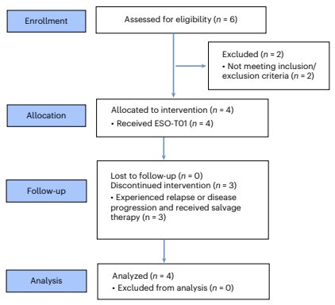

研究背景与核心问题
这里展示一份可编辑的文章草稿。您可以直接修改文字，选中内容后设置加粗，或者把段落设为小标题。
正式使用时，这里将载入系统生成的完整正文。发布与翻译均使用最后审核的版本，人工修改不会被后台重新生成覆盖。
研究设计与配图
下方为已有论文的真实配图，用于体验裁剪操作。可以打开完整 PDF 原页，调整选区并查看结果。
REVIEW INBOX
文章已准备好。在这里完成编辑、配图调整和发布。

打开文章，点击图片上的“调整裁剪”，从 PDF 原页重新框选。文字修改与图片修改一起保存。
GENERATION QUEUE
后台处理完成后，文章会进入审核草稿箱。
已演示“上传后自动入队”。此原型不上传文件或调用生成模型。
这里展示一份可编辑的文章草稿。您可以直接修改文字，选中内容后设置加粗，或者把段落设为小标题。
正式使用时，这里将载入系统生成的完整正文。发布与翻译均使用最后审核的版本，人工修改不会被后台重新生成覆盖。
下方为已有论文的真实配图，用于体验裁剪操作。可以打开完整 PDF 原页，调整选区并查看结果。
PUBLICATION HISTORY
每个渠道独立记录结果，部分失败只重试对应渠道。
已提交，可以关闭页面。正式版将在完成后发送飞书通知。
此处为模拟结果，不代表真实账号权限、远端发布或通知发送。